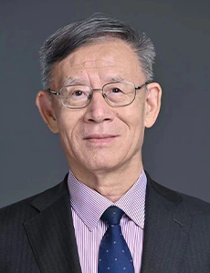
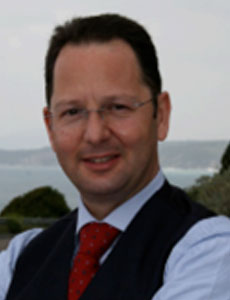
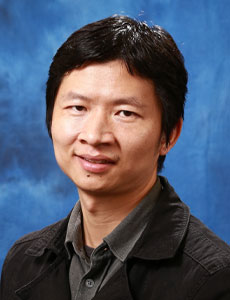

会议介绍
中国生物特征识别大会（Chinese Conference on Biometric Recognition，CCBR）是由中国图象图形学学会（CSIG）、中国人工智能学会（CAAI）、中国科学院自动化研究所主办的国内生物特征识别领域的学术盛会。自2000年以来，CCBR已经在北京、杭州、西安、广州、济南、沈阳、天津、成都、深圳、乌鲁木齐、株洲、上海和徐州等地成功举办了17届，有力地促进了国内本领域的学术和技术发展。
第十八届中国生物特征识别大会（CCBR 2024）将于2024年11月22-24日在南京国际会议大酒店举行，由南京理工大学、南京大学、南京邮电大学和东南大学联合承办。本届会议将汇聚国内从事生物特征识别理论与应用研究的广大科研工作者，并邀请国际同行，共同分享我国生物特征识别研究的最新理论和技术成果，为大家提供精彩的学术盛宴。
特邀报告嘉宾

谭铁牛
中国科学院院士、南京大学党委书记、中国科学院自动化研究所研究员

张大鹏
香港中文大学（深圳）数据科学学院校长学勤讲座教授，IEEE Life/IAPR/AAIA Fellow

陈熙霖
中国科学院计算技术研究所所长兼党委书记，ACM/CCF/IAPR/IEEE Fellow

Massimo Tistarelli
意大利萨萨里大学终身教授，IAPR Fellow

赵国英
芬兰科学院教授、芬兰奥卢大学终身教授，IEEE/IAPR/ELLIS/AAIA Fellow

欧阳万里
上海人工智能实验室领军科学家
Chen Change Loy
新加坡南洋理工大学校长讲席教授
赞助企业
信息更新中...
主办单位
中国图象图形学学会
中国人工智能学会
中国科学院自动化研究所
承办单位
南京理工大学
南京大学
南京邮电大学
东南大学
协办单位
中国图象图形学学会
青年工作委员会
青年工作委员会
中国图象图形学学会
视觉大数据专业委员会
视觉大数据专业委员会
IEEE WIE Beijing Affinity Group
IEEE Beijing Section
Biometrics Council Chapter
Biometrics Council Chapter
IEEE Guangzhou Section
Biometrics Council Chapter
Biometrics Council Chapter
北京市安全技术学会
CCBR历届


CCBR 2018
新疆 乌鲁木齐

CCBR 2017
广东 深圳

CCBR 2016
四川 成都
CCBR 2015
天津